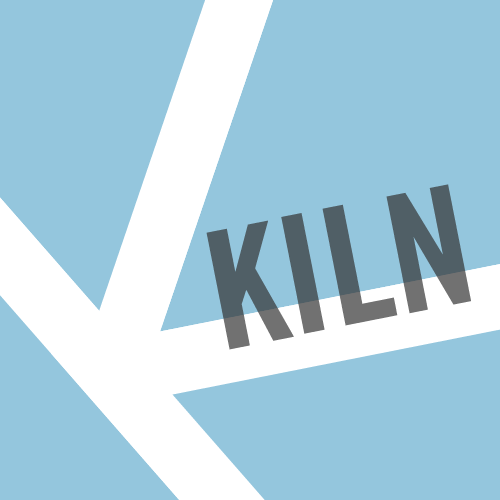

= journalism + technology + data + design
We specialise in data visualisation, digital storytelling, maps and animation. Browse our projects to get the idea.
People
Kiln was founded and is run by Duncan Clark and Robin Houston. It draws on a trusted network of other designers, developers and editors on a project-by-project basis.
Duncan Clark
Duncan is a journalist and author. He is a consultant environment editor at the Guardian and an honorary research associate at UCL. He has previously worked at BBC Worldwide, Profile Books, 10:10 and elsewhere.
Robin Houston
Robin is a web developer and mathematician. He has worked at MySociety, the Sanger Institute, 10:10 and the Guardian, where he built the original website. Robin has a PhD in category theory.
FAQs
Why ‘Kiln’?
Information is like clay: it exists in abundance but only becomes interesting when it’s been processed, shaped and glazed. A kiln is a furnace where materials and form come together to create something useful or beautiful.
So Kiln doesn’t stand for anything?
Not really. We could say ‘Knowledge, Ideas, Learning, News’, but that would be a backronym.
Can we hire you or collaborate?
Yes, we regularly take commissions and work with partners. Please get in touch.
Could you build our new website?
As a rule we don't work on routine web builds, since we prefer to focus on the things that interest us – digital storytelling, maps, visualisation and the like. But no harm in asking.
How did you get your logo to fold into a triangle in that cute little animation?
Our logo is part "K", part map, part typography and part Dudeney Dissection.
Where are you based?
In London. And no, we’re not Italian. We chose the .it domain because kiln is also a verb – ‘to kiln it’ – and the url is a homophone for ‘killin’ it’, which, among other less salubrious things, can mean ‘to be doing something very well’.
Can you make apps?
Yes. We are happy to work on almost any platform, including iOS/Androids apps and interactive installations.